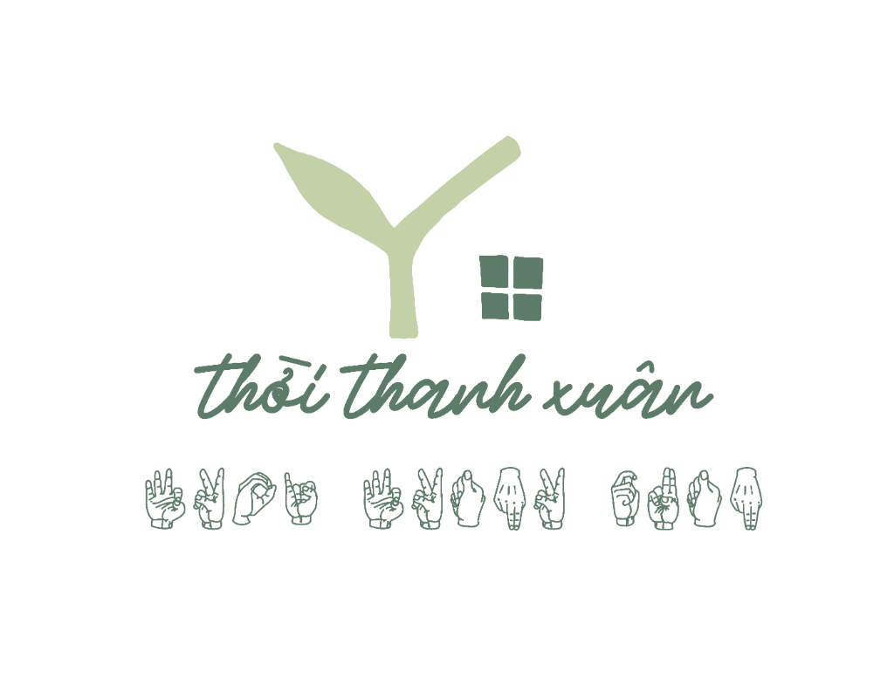

NHÀ CỦA THỜI THANH XUÂN
Trắc nghiệm trainning văn hoá.
Tên nhân sự tham gia
Bắt Đầu Làm Bài
Nhân sự: ...
Câu hỏi 1 / 20
VĂN HÓA & ỨNG XỬ
Đang tải câu hỏi...
0
/ 25
Kết quả bài thi
Đang xử lý kết quả của bạn...
Quay Về Trang Chủ
Làm Lại Đề Ngày Hôm Nay
Xem Lại Đáp Án Chi Tiết
Chọn vào từng câu để kiểm tra